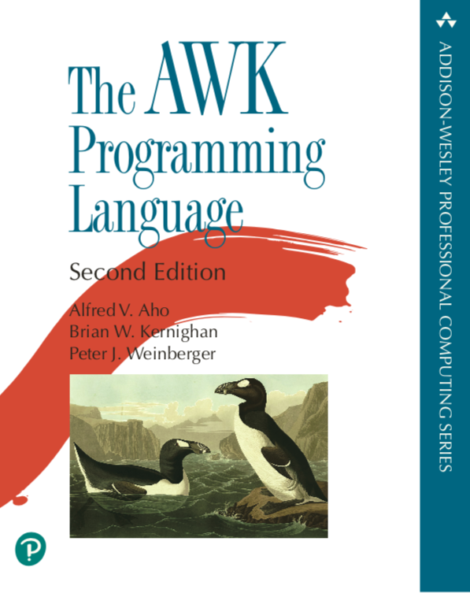
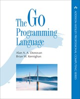

See this OIT page
Brian Kernighan
Department of Computer Science
Princeton University
Princeton, NJ 08544
bwk cs princeton edu
|  |
The AWK Programming Language, Second Edition, by Al Aho, Brian Kernighan and Peter Weinberger. Book web site www.awk.dev. Available in paperback and e-book formats. Order at Amazone. Japanese translation by 千住治郎 Jiro Senju. Translations into other languages are in the works. |
|
Understanding the Digital World: What You Need to Know about Computers, the Internet, Privacy, and Security, Second Edition, March 2021 explains how computer hardware, software, networks, and systems work. It includes enough detail that you can understand how these systems work, no matter what your technical background. The social, political and legal issues that new technology creates are discussed as well, so you can understand the difficult issues we face and appreciate the tradeoffs that have to be made to resolve them. Published by Princeton University Press. Now available at Amazon Amazon and other booksellers in hardback, paperback and e-book. Korean translation by 하성창 Sungchang Ha (2021). Japanese translation by Hiroshi Sake 酒匂寛 (2023). Chinese translation 978-7-111-72512-1 (2023). Translations into other languages are underway. Errata |
|
Unix: A History and a Memoir. Since its creation in a Bell Labs attic in 1969, the Unix operating system has spread far beyond anything its creators could have imagined. It has led to the development of a great deal of innovative software, influenced myriad programmers, and changed the path of computer technology. This book is part history and part memoir. It tells the story of the origin of Unix, explaining what Unix is, how it came about, and why it matters. Accessible to non-speciaists, the book is written for anyone with an interest in computing or the history of inventions. Published by Kindle Direct Publishing, October 2019. Available at Amazon in paperback and e-book formats. Korean translation by 하성창 Sungchang Ha, August 2020. German translation, October 2020.Chinese translation by 韩磊 Han Lei, March 2021.Russian translation by Рузмайкина И, 2021. Polish transation by Piotr Cieślak, 2021. Translations into Japanese and other languages are underway. More information, errata, etc. |
|
Millions, Billions, Zillions: Defending Yourself in a World of Too Many Numbers. With examples drawn from a rich variety of sources, including journalism, advertising, and politics, the book demonstrates how numbers can mislead and misrepresent. In chapters covering big numbers, units, dimensions, and more, it lays bare everything from deceptive graphs to speciously precise numbers, and shows how anyone -- using a few basic ideas and lots of shortcuts -- can easily learn to recognize common mistakes, determine whether numbers are credible, and make their own sensible estimates when needed. An essential survival guide for a world drowning in big -- and often bad -- data. Published by Princeton University Press in November, 2018. Available at Amazon. Italian translation by Giuseppe Maugeri. Korean translation by Yang Byeongchan; ISBN 979-11-90030-42-7. Japanese translationn by Mioko Nishida (西田美緒子). Translations into Traditional Chinese (ISBN 978957-14-7635-3, translation by 劉懷仁) and Simplified Chinese (ISBN 978-7-5402-6235-8, translation by 洪佳旭) |
|
Understanding the Digital World: What You Need to Know about Computers, the Internet, Privacy, and Security explains how computer hardware, software, networks, and systems work. It includes enough detail that you can understand how these systems work, no matter what your technical background. The social, political and legal issues that new technology creates are discussed as well, so you can understand the difficult issues we face and appreciate the tradeoffs that have to be made to resolve them. Published by Princeton University Press. Now available at Amazon and other booksellers in both hardback and e-book form. Korean translation (August 2017, translated by 하성창 Sungchang Ha); Chinese translation (March 2018, translated by 刘艺 刘哲雨 吴英 译); Italian translation Fabrizio d'Amore and Monica Manzoni; Japanese translation by Hiroshi Sake 酒匂寛 (2020). Czech translation by Petr Holčák (2019) |
|  |
The Go Programming Language, by Alan Donovan and Brian Kernighan. Book web site www.gopl.io. Available in paperback and e-book formats. Japanese, Chinese (Simplified and Traditional), Russian, Korean, Portuguese and Polish translations are now available. |
|
Hello, World! Opinion columns from The Daily Princetonian is available as a Kindle book from Amazon. |